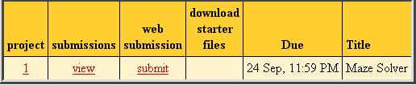

| Home |
| Syllabus |
| Schedule (w/ links to handouts) |
| Resources |
| Piazza |
| Submit Server |
| Grades Server |
CMSC 330, Spring 2013
Organization of Programming Languages
Project 1 - Maze Solver
Introduction
As we saw in lecture, Ruby provides rich support for tasks that involve text processing. For this project, you'll write a Ruby program that processes text files containing maze data, and you will analyze that data to determine certain features of each maze. The goal of this project is to allow you to familiarize yourself with Ruby's built-in data structures and text processing capabilities.
Getting Started
Download the following zip archive p1.zip. It should include the following files:- Your Ruby program - maze.rb
- Test inputs (sample maze data files, in simple and standard format)
- Test outputs (maze.rb output)
- Submission scripts
- submit.jar
- .submit (Your OS may prevent you from seeing this file because it believes it is a system file)
- submit.rb
- Test script
- goTest.rb - script to run public tests
Simple Maze Data File Format
Mazes are defined in text files according to a format we describe next, which we refer to as the simple maze data file format. The maze.rb we have provided includes a parser for files in this format. In the last part of the project you will have to write a parser for files in a different format.
The maze data files have a relatively simple structure. Here's an example:
16 0 2 13 11 0 0 du 123.456 0.123456 0 1 uldr 43.3 5894.2341 20.0 5896.904 ... path path1 0 2 urdl path path2 0 2 drlr
The first line in the file is the maze header. It has the form:
<size> <start_x> <start_y> <end_x> <end_y>
These fields indicate (respectively) the size of the maze and the (x,y) coordinates for the start and end points. All mazes are square, so the size indicates both the length and the width. Coordinates start in the upper left-hand corner of the maze and increase as they move down and right. For example, in a maze of size 16, (0,0) is the upper-left corner, and (15,15) is the lower-right corner. With this coordinate system, moving down from a cell increases its y value, and moving right from a cell increases its x value. Thus going up from (5, 8) would take you to (5, 7), going down would take you to (5, 9); going left or right would respectively lead to (4, 8) and (6, 8).
Unlike common mazes that one might find on paper, the start and end points are arbitrary points inside the maze. A valid maze has no openings in the outer wall. The outer perimeter of the maze is a single, solid wall, so you needn't worry about accidentally walking through an open wall out into the space outside the maze.
Every line beyond the first can represent either a cell in the maze or a path through the maze. Each cell specifies where walls are (more precisely are not) in the maze, while a path is a trip through the maze defined by the cells.
Lines representing cells take the form:
<x> <y> <dirs> <weights>
The dirs part is a set of up to four "open wall" characters, (any combination of 'udlr', representing up, down, left, right), followed by up to four floating point weights (separated by spaces), one per character in dirs. For example,
4 7 lur 1.3 5.6 8.2
indicates that the cell at coordinates (4,7) has openings that lead left, up, and right from that cell (and thus there is a wall that prevents movement down). The characters can appear in any order, but may only include 'udlr', and each letter may appear at most once. A direction is not passable if its representative character is not in this list. Similarly, if a maze specification does not mention a particular cell, then you can presume that all of that cell's walls are closed.
Following the list of open walls is a list of weights for each wall opening. These appear in the same order as the open walls: in the example above, the left opening has weight 1.3, the up opening has weight 5.6, and the right opening has weight 8.2. We'll explain what these weights will be used for later.
Lines representing paths take the form:
path <path_name> <start x> <start y> <move 1><move 2>...
In the simple format, there is one path per line. Each path consists of a name, a starting x/y coordinate, and a list of directions (which we'll call "moves"), all concatenated together, that the path takes to reach its destination. The start coordinates must consist only of integers, and directions may only include the letters "u," "d," "l," and "r,"; for example:
path path1 0 2 uurrddllThe path path1 starts at coordinates (0,2) and then proceeds up twice, right twice, down twice, and left twice, to reach its ending point (which happens to be the same as the starting point).
The maze.rb file we have given you will parse in the data in this format. The parser is invoked by the mode print, which prints its results so you can see how it has parsed the different parts of the maze. (You'll change the implementation of print before finishing the project, as described below.)
Part 1: Find Maze Properties
The first thing your program will do, of course, is to read in the maze using the parser provided. You may assume all maze files in the simple format are valid. Your program will then compute various properties of the maze, according to the command (mode) it is given. Here are two simple properties you'll compute: the number of closed cells, and the number of open walls in each direction.
First, if we invoke your script with the mode closed, your script should output one line listing exactly the number of closed cells in the maze, where a closed cell is one with no open walls. For example,
% ruby maze.rb closed maze1 2
Second, if we invoke your script with the open mode, your script should output the number of open walls in each direction, in the order u, d, l, r. They should be formatted exactly as appears below.
% ruby maze.rb open maze1 u: 8, d: 8, l: 7, r: 7
Part 2: Rank Paths By Cost
As described in the introduction, some maze files will contain paths. These paths run from the start cell of the maze to its end cell. You will need to use the weights for each opening in the maze to calculate the cost of each path, and then sort the paths in order of cost from lowest to highest. For example, if the coordinates (in a simple maze file)
path path1 0 1 drdu
appear in a path, and the cell at (0,1) is defined as
0 1 ldr 342.54 958.1 3.126
the cost of the first move in the path will be 958.1 (the weight for the "d" opening). The cost of a whole path is the sum of the weight of each opening through which it passes.
Your program should print a comma separated list of the name of each path in order of cost from lowest to highest.
% ruby maze.rb paths maze2 path1, path2
This means that the path named "path1" was the least expensive, the path named "path2" was second least expensive, etc...
If a maze contains no paths, your program should simply print None.
% ruby maze.rb paths maze1 None
The file maze1 contains no paths, so None is printed.
Part 3: Pretty-print Maze
The textual specification of mazes makes them difficult to understand. For this part of the assignment, you'll implement a "pretty-printing" function for mazes. Your pretty print format will use the following conventions:
- Each cell will be represented by either a space, the letter "s" (for the start cell), or the letter "e" (for the end cell).
- Left/right walls will be represented by a pipe character "|", up/down walls will be represented by a dash "-", and wall junctions will be represented with a plus "+".
Your program will print a maze in this format when executed with the "print" command.
For example:
% ruby maze.rb print maze1 +-+-+-+-+ |s| | | + + + +-+ | | +-+ + + + | | | + +-+ +-+ | | | e| +-+-+-+-+
In this example, the maze starts at (0,0) and ends at (3,3). Each cell is represented by " ", "s", or "e"; walls are represented by "|" or "-", and are joined by "+" characters.
Part 4: Decide Whether Maze Is Solvable
Now we want to use your script to determine whether or not a maze can be solved. The way we recommend you do this is by actually finding a path from the start to the end (that is, by solving the maze!).
We recommend you do this by implementing breadth-first or depth-first search for you maze representation. If, after exploring all cells that are reachable (through open walls) from the start cell, you have not reached the end cell, the maze cannot be solved. If you encounter the end cell while traversing the maze, there exists a path from start to finish, and the maze can be solved. There may be multiple paths from the start cell of a maze to its end cell, but your program need only find one.
Note that you do not need to return the length of the path from start to finish—your program will only need indicate whether a path exists by printing "true" when a maze can be solved and "false" otherwise.
% ruby maze.rb solve maze1 true
Part 5: Parse Standard Maze Files
Standard maze files use a more complex file format, described below. If we invoke your script with the mode parse, your script needs to read in and parse a standard maze file using Ruby regular expressions, then output the maze in the simple maze file format.Some lines in a standard maze file may not be exactly in the format specified. If any such invalid lines exist, your script should output invalid maze followed by each invalid line in the maze file. The goal is primarily to find formatted input, not invalid mazes (e.g., ones in which one cell defines a wall while the other does not define the corresponding wall); you can assume we will always provide mazes that, if the input parses properly, yields a self-consistent maze.
For example
% ruby maze.rb parse maze1-std ...prints out maze1-std in simple maze format... % ruby maze.rb parse maze3-std invalid maze ...prints out all invalid lines in maze3-std...
In addition, path names in standard maze files containing escaped quotes (e.g., \"path1\") must be converted to path names with normal quotes (e.g., "path1") in the standard maze file output.
Now we describe the standard maze file format in full detail. Standard maze files differ as follows from their simple counterparts. Here's an example:
maze: 16 0:2 -> 13:11 0,0: du 123.456,0.123456 0,1: uldr 43.3,5894.2341,20.0,5896.904 ... "path1:(0,2),u,r,d,...,l","path2:(0,2),d,r,l,...,r"
A standard file contains several lines of text according to the following format. The first line is the header, as in the simple case, and is now formatted as follows:
maze: <size> <start_x>:<start_y> -> <end_x>:<end_y>
Notice that now the line begins with the keyword maze, uses separate delimiters in various places (commas or colons instead of spaces), and has a textual arrow -> between the starting and ending coordinates. Lines missing any of the above formatting (maze keyword, colons, etc.) or having any extra fields are invalid.
Lines representing cells take the form:
<x>,<y>: <dirs> <weights>
Following the coordinates (x and y, separated by a comma) is a colon, a space, a set of up to four "open wall" characters ('udlr'), and a comma-separated list of floating point weights (with no space between the commas). Recall the following cell earlier specified in the simple format:
4 7 lur 1.3 5.6 8.2Here is the same specification in the standard format:
4,7: lur 1.3,5.6,8.2It is acceptable for weights to be negative.
Lines representing paths take the form:
"path1_name:(<start x>,<start y>),<move 1>,<move 2>,...","path2_name:(<start x>,<start y>),..."
There are several differences with how paths are formatted in standard maze files, compared to simple maze files. First, each line of text may contain more than one path, with each path contained within a pair of quotation marks (") and separated by commas. Note that path names can contain any character except space or colon, and quotation marks in path names will be escaped (\"). The first line in the example below shows two path specifications; each path is identified by the second line (which would not appear in an actual data file):
"path1:(0,2),l,...","path\"2\":(0,2),d,..." [ first path ] [ second path ]Note that in these examples the second path contains two escaped quote characters; there is no requirement that escaped quotes correspond to open and closed marks, i.e., you can have any number of escaped quotes in a path's name.
In the example
"hello-world:(0,2),u,r,d,...","goodbye-world:(0,2),d,r,..."
The first path (named "hello-world") starts at (0,2), continuing to (0,1), (1,1), (1,2), and so on. The second path (named "goodbye-world") also starts at (0,2), but instead moves to (0,3), (1,3) and so on.
If any path names contain escaped quotes, they must be converted to normal quotes. For instance the names path\"3\" and \"path4\" should be converted to path"3" and "path4" in the simple maze file format output.
For examples of how standard maze files are parsed and used to generate simple maze files (or report errors), look at the files maze1-std.parse.out, maze2-std.parse.out, maze3-std.parse.out, and maze4-std.parse.out generated from maze1-std, maze2-std, maze3-std, and maze4-std.Hints and Tips
- This project is non-trivial, in part because you will probably be writing in Ruby for the first time, so be sure to start right away, and come to office hours if you get stuck.
- Follow good program development practices: Test each part of your program as you develop it. Start developing a simplified solution and then add features as you are sure that earlier parts work. Test early and often, and re-run your tests as you add new features to be sure you didn't break anything.
- Before you get too far, review the Ruby class reference, and look for classes and methods that might be helpful. For example, the Array and Hash classes will come in handy. Finding the right class might save you a lot of time and make your program easier to develop.
- If you write methods that should return a true or false value, remember that a Ruby 0 is not false.
- Ruby has an integrated debugger, which can be invoked by running Ruby with the -rdebug option. The debugger's p command may be helpful for viewing the values of variables and data structures. The var local command prints all of the local variables at the current point of exclusion. The chapter When Trouble Strikes of The Pragmatic Programmer's Guide discusses the debugger in more detail.
- To thoroughly debug your program, you will need to construct test cases of your own, based on the project description. If you need help with this, please come to TA office hours.
- Remember to save your work frequently---a power failure, network failure, or problem with a phone connection could cost many hours of lost work. For the same reason, submit your project often. You can retrieve previously-submitted versions of your program from the submit server should disaster strike.
- Be sure you have read and understand the project grading policies in the course syllabus. Do this well in advance of the project due date.
Code Reviews
Following the submission and grading of this project (details below), you will be asked to perform code reviews on the projects of two other students. Part of your final project grade will be determined by the quality of the reviews you write. That is, if you don't submit the reviews, or do not a good job with them, you will lose points. Conversely, getting a bad review from someone does not affect your grade (though of course you take their feedback into account!). The code review will constitute 1/16 of the total score for the project.A good code review will
- Point out unnecessarily complicated coding idioms, and suggest simpler alternatives. For example, suggest refactoring a large method into several smaller ones. Or suggest abstracting out certain functionality into a separate, more generic class.
- Point out where comments would be useful, or where comments are unnecessary or too verbose
- Highlight unhelpful variable or method names and suggest alternatives
- Identify inconsistent formatting and/or naming/usage conventions
- Identify possible errors/incomplete logic
- Ask questions about the rationale for some bit of code
- Compliment particularly simple and effective code constructions
Project Submission
You should submit a file maze.rb containing your solution. You may submit other files, but they will be ignored during grading. We will run your solution by invoking:where <mode> describes what the tool should do (see above), and <file-name> names the file containing the maze data.
Be sure to follow the project description exactly. Your solution will be graded automatically, and so any deviation from the specification will result in losing points. In particular, if you have any debugging output in your program, be sure to turn it off before you submit your program.
You can submit your project in two ways:-
Submit your maze.rb file directly to the
submit server
by clicking on the submit link in the column "web submission".

Next, use the submit dialog to submit your maze.rb file directly.

Select your file using the "Browse" button, then press the "Submit project!" button. You do not need to put it in a Jar or Zip file.
-
Submit directly by executing a Java program on a computer
with Java and network access. Included in p1.zip
are the following files:
- submit.jar
- .submit (Your OS may prevent you from seeing this file because it believes it is a system file)
- submit.rb
The files should be in the directory containing your project. From there you can either execute submit.rb, or type the following command directly:
java -jar submit.jar The first time you submit this way you will be asked to enter your linuxlab class account and password. All files in the directory (and its subdirectories) will then be put in a jar file and submitted to the submit server. If your submission is successful you will see the message:
Successful submission # received for project 1
Academic Integrity
The Campus Senate has adopted a policy asking students to include the following statement on each assignment in every course: "I pledge on my honor that I have not given or received any unauthorized assistance on this assignment." Consequently your program is requested to contain this pledge in a comment near the top.
Please carefully read the academic honesty section of the course syllabus. Any evidence of impermissible cooperation on projects, use of disallowed materials or resources, or unauthorized use of computer accounts, will be submitted to the Student Honor Council, which could result in an XF for the course, or suspension or expulsion from the University. Be sure you understand what you are and what you are not permitted to do in regards to academic integrity when it comes to project assignments. These policies apply to all students, and the Student Honor Council does not consider lack of knowledge of the policies to be a defense for violating them. Full information is found in the course syllabus---please review it at this time.